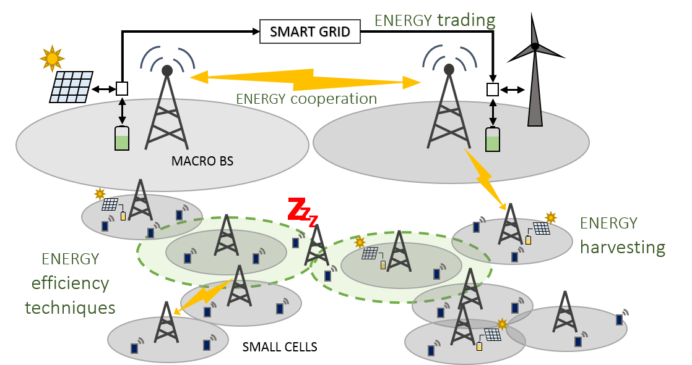

My Research
Network resource allocation policies with energy transfer capabilities

My research project investigates on possible integration architectures between the energy harvesting mobile network and the smart electricity grid.
In particular, the main scope is to study the capability of 5G mobile networks of intelligently routing energy in a micro grid of interconnected conventional/renewable energy sources and loads to
In particular, the main scope is to study the capability of 5G mobile networks of intelligently routing energy in a micro grid of interconnected conventional/renewable energy sources and loads to
- satisfy the demand of communication networks while avoiding energy outages in zones with high user density and/or low ambient energy availability
- provide ancillary services to the grid.
 This project has received funding from the European Union Horizon 2020 research and innovation programme under the Marie Sklodowska-Curie grant agreement No. 675891 (SCAVENGE).
This project has received funding from the European Union Horizon 2020 research and innovation programme under the Marie Sklodowska-Curie grant agreement No. 675891 (SCAVENGE).